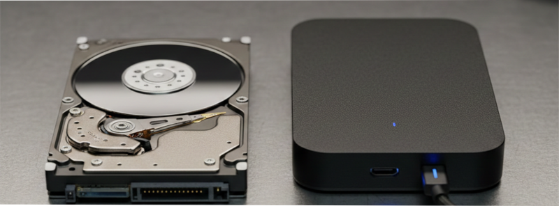
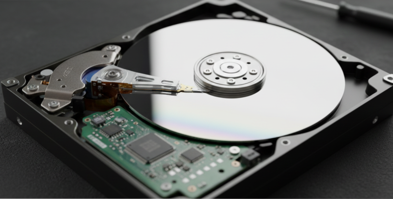
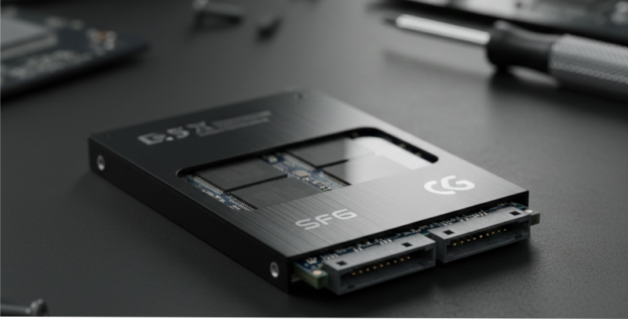
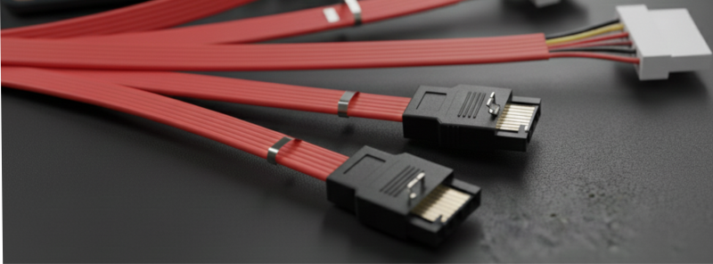
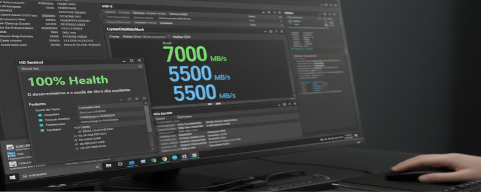

Armazenamento?
O armazenamento é responsável por guardar os dados do sistema, programas e arquivos pessoais.
Existem diferentes tecnologias e formatos, cada um com vantagens específicas em velocidade, capacidade e durabilidade.

HD (Disco Rígido)
O HD (Hard Disk) utiliza discos magnéticos e um braço mecânico para gravar e ler dados.
É mais lento, porém tem maior capacidade e custo mais baixo.
Sua velocidade é medida em RPM (rotações por minuto).
- 5400 RPM – mais comum em notebooks.
- 7200 RPM – comum em desktops.
- 10000 RPM – uso profissional e servidores.

SSD (Unidade de Estado Sólido)
O SSD usa memória flash, sem partes móveis, o que o torna muito mais rápido e silencioso que o HD.
Melhora o tempo de inicialização do sistema e o carregamento de programas.
Sua durabilidade é medida em ciclos de gravação (TBW).

SSD M.2 e NVMe
O M.2 é um formato mais compacto usado em placas modernas.
Pode funcionar em dois modos:
- M.2 SATA: usa o mesmo protocolo dos SSDs convencionais.
- M.2 NVMe: usa o barramento PCIe, com velocidades até 7x maiores.
💡 Ideal para notebooks e PCs modernos pela eficiência e economia de espaço.

Conexões SATA
O padrão SATA (Serial ATA) é usado para conectar HDs e SSDs.
Ele utiliza dois cabos:
- Dados: cabo fino e geralmente colorido (vermelho ou preto).
- Alimentação: vem da fonte ATX com 15 pinos.
⚙️ A versão mais comum hoje é o SATA III com velocidade de até 6 Gb/s.

Comparativo HD x SSD x NVMe
| Tipo | Velocidade | Vantagem | Desvantagem |
|---|
| HD | 80–160 MB/s | Alta capacidade e preço baixo | Lento e frágil |
| SSD SATA | 400–550 MB/s | Rápido e silencioso | Menor durabilidade |
| SSD NVMe | 2500–7000 MB/s | Altíssimo desempenho | Custo elevado |

Teste de Velocidade
Para medir o desempenho das unidades, use ferramentas como:
- CrystalDiskMark: mede leitura e gravação.
- HD Sentinel: analisa a saúde do disco.
- SSD-Z: exibe informações detalhadas do modelo.
💻 A prática mostrará como o SSD acelera o tempo de boot e instalação de sistemas.

Instalação do Sistema
Para instalar o sistema operacional:
- Conecte o SSD via SATA ou M.2.
- No BIOS, defina o modo AHCI ou NVMe.
- Formate o disco e instale o Windows normalmente.
⚠️ Sempre desconecte outros discos antes da instalação para evitar erros de boot.
Conclusão
Compreender os tipos de armazenamento é essencial para otimizar o desempenho e a manutenção.
Saber diferenciar HD, SSD e M.2 ajuda o técnico a escolher a melhor solução para cada cliente.
Na próxima aula, veremos montagem final e manutenção preventiva.